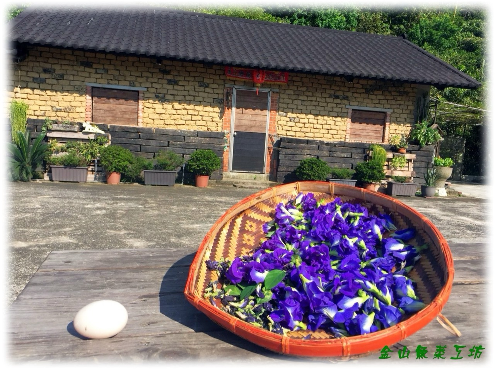

老屋重生
簡家土埆厝建於 1910 年，從一條龍格局到增建護龍，歷經荒廢，也等到家人重新伸手。四兄弟出錢出力，修的不只是牆與瓦，更是祖先留下來的一口氣。

網站主題
從美人山下的土埆厝出發，人生走過台北街頭、台南茶行、營建工地與捷運現場，也走進苗栗山城的蜂箱與花期。這個網站想留下的不只是經歷，而是一個人如何在時代裡打拚，又如何在回望時，把家、土地與親情重新安放。
開場故事
簡家土埆厝建於 1910 年，從一條龍格局到增建護龍，歷經荒廢，也等到家人重新伸手。四兄弟出錢出力，修的不只是牆與瓦，更是祖先留下來的一口氣。
昔日水田如今改種洛神花、金桔、南瓜等蔬果，堅持不施化肥、不噴農藥。回到土埆厝，不只是返鄉務農，也是把童年騎牛、放牛、走田埂的記憶，重新種回土地裡。
從黃埔大背包走出台北車站，到台南茶行、木柵線、北二高與捷運局，每一次轉身都曾吃力，卻也把人生推向更開闊的地方。山在身後，海在前方，路一直走，故事也一路長出來。
金山美人山下的梯田、水圳、竹林、溪蝦與水牛，藏著農家子弟最早的眼界，也藏著一生都帶得走的韌性。
閱讀故鄉從 1910 年落成、家族修復，到今日重新開門迎風，老屋的時間軸，也是家族記憶重新被點亮的過程。
查看時間軸台南茶行創業、景氣反轉、回到營建本行，再投入捷運工程；人生不是直線，卻在每一次轉彎後，看見新的路。
閱讀生命誌苗栗頭份的養蜂人家，從老蜂農五十餘年的花期腳步，到下一代承接蜂群與家業，甜味背後是長年的專注。
進入養蜂故事蜂蜜結晶、百花蜜、龍眼蜜與蜂農逐花而居的日常，都是大自然寫下的課本，也值得慢慢整理成知識庫。
閱讀蜜蜂知識退伍、求職、創業、工地、品管、安衛與捷運，每一段都不是小插曲，而是一個時代在個人身上留下的紋路。
閱讀故事台北首次申辦世界花卉博覽會期間的勤務支援、現場照片與短片，讓一段城市盛事，留下親身走過的溫度。
看花博花絮老屋、梯田、品茗桌、捷運工地與蜂箱旁的照片，讓文字不只被閱讀，也能被看見、被想起。
瀏覽相簿把故鄉、茶香、工程、蜂蜜與回家的心情寫成歌，讓生命故事不只留在頁面，也能被輕輕唱出來。
打開歌曲台灣茶、紫砂壺、和田玉與老物件，都是時間磨出的光。收藏不是只看價值，更是在保存一個人和歲月相處的方式。
進入和田玉收藏照片相簿
相簿收進土埆厝、金山景色、茶行歲月、捷運工程與翔勝養蜂。每一張照片都像一枚路標，點開之後，日期、地點、歌曲與簡短說明會把人帶回當時的現場。
最新文章
片刻記憶